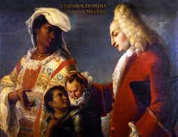

Spaniards and the Indian produce a Mestizo. Attributed to Juan Rodriguez Juarez. c. 1715 CE Oil on canvas.
- Form
- A Spanish gentleman married an indigenous woman and produced a mestizo, who is carried on the back of a servant
- Many Africans and Indians are rendered with Southern European features: slim noses, curly hair, almond-shaped eyes
- Function
- Spanish colonists commissioned these works to be sent abroad to show the caste system of the New World
- Not considered art objects but illustrations of ethnic groups
- Context
- Panel from the first known series of casta paintings; may not have been a completed set.
- Spanish social hierarchy with the European ancestry at top; sixteen different gradations on the social scale
- Spanish blood linked to civilizing forces; wearing lavish costumes
- Africans and Indians are rendered with respect; showing harmony and mixing of the classes